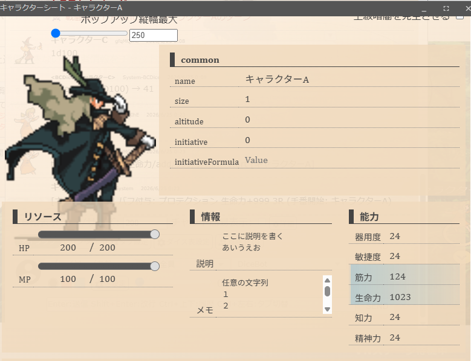
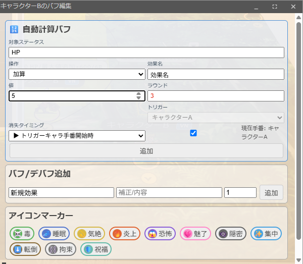
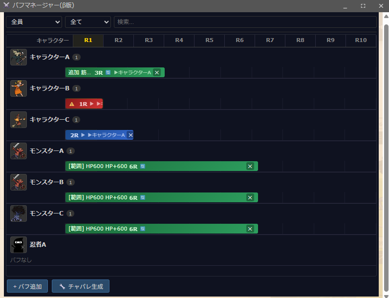
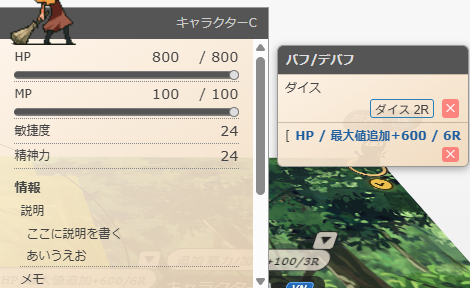
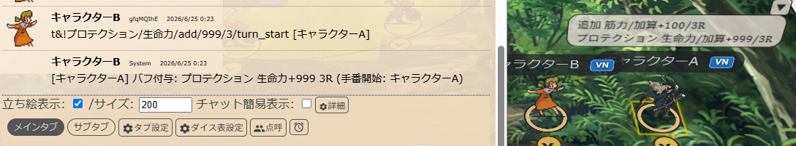
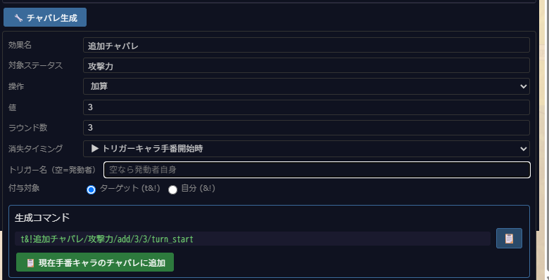

自動計算バフ、消失タイミング、バフマネージャー、チャットコマンド拡張による強力なバフ管理システム。
バフはキャラクターにプラスの効果を与え、デバフはマイナスの効果を与えます。効果はR（ラウンド）で管理され、戦闘の進行に合わせて自動で減少・消失します。
リコリスには2種類のバフがあります：
自動計算バフは、キャラクターのステータス（HP、攻撃力など）を自動で増減します。バフが切れると自動的に元の値に戻ります。
コマの設定シートから「バフ/デバフ」セクションで設定できます。

| 操作 | 説明 | 例 |
|---|---|---|
| 加算（add） | 現在値に値を加算。バフ解除で元に戻る | 攻撃力+10 |
| 最大値追加（append） | 最大値を増加。現在値も同様に増加 | 最大HP+10 |
| 現状記録（current） | 現在の値を記録。バフ解除で記録時の値に戻る | HP記録 |
| 置換（replace） | 値を指定値に置き換え。バフ解除で元の値に戻る | AC=18 |
| 新規要素（create） | 新しいステータス要素を作成。バフ解除で削除 | 一時HP新規作成 |
| チャパレ（palette） | チャットパレットコマンドをボタン化 | セーブボタン |

バフがいつ切れるかを3種類から選べます。システムに合わせて柔軟に対応できます。
| タイミング | アイコン | 説明 | 対応システム例 |
|---|---|---|---|
| ラウンド終了時 | 🔄 | ラウンドが切り替わる時にRが減少 | D&D、一般 |
| トリガーキャラ手番開始時 | ▶ | 指定したキャラの手番が来た瞬間にRが減少 | ソードワールド |
| トリガーキャラ手番終了時 | ⏹ | 指定したキャラの手番が終わった時にRが減少 | 一部バフ |
手番開始時・手番終了時を選んだ場合、どのキャラのターンで発動するかを「トリガーキャラ」として指定します。
💡 ソードワールドの例：「プロテクション（3R）」を魔術師が使用 → 消失タイミングを「トリガーキャラ手番開始時」、トリガーを魔術師に設定。毎ラウンド、魔術師の手番が来るたびにRが減少します。
イニシアチブパネルの「⚔️ バフマネージャー(β)」ボタンから開ける、全バフを一覧管理するパネルです。

RangeArea（範囲オブジェクト）の設定シートで「範囲バフを有効にする」をチェックすると、範囲内のコマに自動でバフを付与します。
コマにマウスオーバーすると表示されるホバー窓（Overview Panel）の右側に、バフサイドパネルが表示されます。

チャットパレットやチャット送信で & を使ってバフを操作できます。VNチャパレ・通常チャパレ両方で動作します。
&バフ名/補正テキスト/R → バフを付与（R省略時=3）
&バフ名/補正 → バフを付与（R省略時=3）
&R- → 全バフのRを減少
&R+ → 全バフのRを増加
&D → 0R以下のバフを削除
&バフ名- → 指定したバフを削除
t&バフ名/補正/R → ターゲット中のコマに付与&! で始めると、自動計算バフとして付与されます。ステータスが自動で増減し、バフ解除で元に戻ります。
&!効果名/対象ステータス/操作/値/R
&!効果名/対象ステータス/操作/値/R/タイミング
&!効果名/対象ステータス/操作/値/R/タイミング/トリガー名
t&!効果名/対象ステータス/操作/値/R → ターゲット中のコマに付与| 指定 | 操作 |
|---|---|
add | 加算（現在値に加算） |
append | 最大値追加 |
current | 現状記録 |
replace | 置換 |
create | 新規要素追加 |
palette | チャパレ |
| 指定 | タイミング |
|---|---|
round_end | ラウンド終了時 |
turn_start | トリガーキャラ手番開始時 |
turn_end | トリガーキャラ手番終了時 |
タイミングが turn_start / turn_end の場合のみ指定可能。キャラクター名で指定（部分一致で検索）。省略時は発動者自身がトリガーになります。
&!マッスルベアー/攻撃力/add/10/3
→ 自分の攻撃力+10、3R（ラウンド終了時消失）
&!プロテクション/防護力/add/4/3/turn_start
→ 自分の防護力+4、3R（自分の手番開始時にR減少）
&!プロテクション/防護力/add/4/3/turn_start/魔術師
→ 魔術師の手番開始時にR減少
t&!ウィークネス/攻撃力/add/-5/3
→ ターゲット中のコマの攻撃力-5、3R（デバフ）
&!一時HP/HP/create/10/3
→ HPという新規要素を作成、値10、3R
&!毒/HP/add/-3/5/round_end
→ 自分のHP-3、5R（ラウンド終了時に減少、毎R持続）💡 t&! について：t を付けると、現在ターゲット中のコマにバフを付与します。敵にデバフをかけたい時に便利です。

バフマネージャーの「🔧 チャパレ生成」タブから、GUIで &! 構文を自動生成できます。

&! 構文が自動生成される💡 生成されたコマンドをチャパレに登録しておけば、戦闘中にワンクリックでバフを付与できます。よく使うバフをプリセットとして登録しておくのがおすすめです。